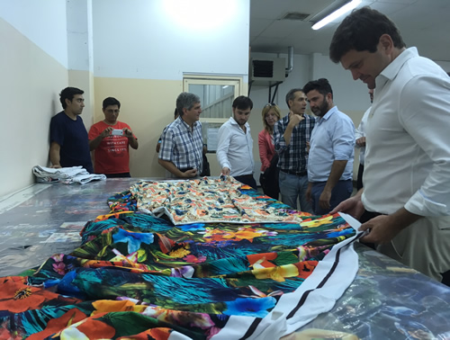
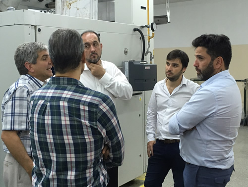

Real Chubut - Agencia de Noticias


Mamet y funcionarios nacionales evaluaron temas referidos al Plan Patagonia y visitaron empresas textiles en Trelew

Estuvieron en las plantas de Sedamil, Furman, Propulsora Patagónica y Pelama
Fue en el marco de una reunión efectuada con el sector empresario y en las recorridas que se realizaron en Puerto Madryn y en el Parque Industrial de Trelew. Se hizo hincapié en energías renovables, polo naval, agua, Meseta Intermedia, industria textil, infraestructura y polo tecnológico.
El ministro de la Producción, Pablo Mamet, valoró la visita a Chubut de subsecretarios de la cartera productiva de Nación y destacó que durante una reunión llevada a cabo en la Cámara Industrial de Puerto Madryn, se presentaron temas referidos al Plan Patagonia.
También se plantearon las distintas temáticas en cada una de las visitas que realizaron por distintas empresas.
Previo a la recorrida que se efectuó este martes en la empresa Exal de la ciudad del Golfo que fue encabezada por el gobernador Mario Das Neves, el ministro Mamet presidió una reunión de trabajo con los subsecretarios de Integración Productiva, Fernando Premoli: de Integración de Políticas Productivas, Gustavo Perego, y de Articulación Federal y Sectorial, Guillermo Acosta, junto al sector industrial donde se avanzaron en distintas temáticas.
Al encuentro asistieron el ministro de Ambiente, Ignacio Agulleiro; la secretaria de Ciencia, Noelia Corvalán; el subsecretario de Industria, Crhistian Fraysse; en representación de CORFO, Esteban Parra; el diputado nacional, Sixto Bermejo, y el director del Pami en Chubut e Ignacio Torres.
Además estuvieron presentes representantes de la Federación Empresaria del Chubut (FECH), la Cámara de Comercio de Puerto Madryn (CAMAD), la Cámara de Empresas y Emprendedores de Tecnologías de la Información (CAMETIC), de Industria y Comercio del Este del Chubut (CICECH), la Universidad San Juan Bosco, la Universidad del Chubut y el presidente del Club Náutico.

PRESENTACIÓN DE TEMAS PLAN PATAGONIA
Al respecto de la reunión en Puerto Madryn Mamet indicó que "tuvo como objetivo la presentación de temas referidos al Plan Patagonia, energías renovables, polo naval, agua, meseta intermedia, industria textil, infraestructura y polo tecnológico".
Por eso "al finalizar estas presentaciones se realizó una recorrida junto al gobernador por la empresa productora de tejos de aluminio Exal Group, además de la visita por la planta se mantuvo una reunión con los directivos de la misma".
Luego "visitamos con los funcionarios nacionales y el secretario de Pesca, Adrián Awstin, la empresa Harinas Patagónicas, una planta procesadora de desechos de pescado, donde los funcionarios de Nación conocieron todo el proceso de la elaboración de la llamada harina de pescado".
Mamet detalló que "la recorrida por el Parque Pesquero de Puerto Madryn, único en el país inscripto en el Registro Nacional de Parques Industriales (RENPI), finalizó con una visita a la planta procesadora de pescado Greciamar".
RECORRIDA POR EL PARQUE INDUSTRIAL DE TRELEW
El ministro de la Producción señaló que por la tarde "junto a la comitiva de Nación visitamos el Parque Industrial de Trelew, y nos reunimos con el presidente, Martín Castillo, y representantes de las empresas Coca Cola, Pelama, Propulsora Patagónica y Sedamil, quienes realizaron una presentación formal y plantearon los temas y problemas del sector industrial".
Y agregó que "fue todo lo referido a la problemática en la que el gobierno de la provincia viene trabajando y manteniendo reuniones en Buenos Aires ante Nación, desde hace un tiempo en búsqueda de soluciones para un sector que viene atravesando un mal momento".
"Luego de esta presentación recorrimos la planta de la empresa textil Sedamil, donde además de conocer todos sus procesos productivos, mantuvimos una reunión en la que se marcaron temas prioritarios para avanzar y trabajar conjuntamente y también visitamos la lanera Furhmann", detalló.
En ese marco Mamet resaltó que ¨esta es la única manera que tienen los funcionarios de Nación de tener conciencia de los temas y problemas que atraviesa el sector, que es lo que expresa y detalla el gobernador Das Neves ante el presidente Mauricio Macri, o ante los ministros cada vez que realiza gestiones en Buenos Aires".
Por eso valoró que "las jornadas de trabajo y las recorridas como las que efectuamos durante todo este martes en Puerto Madryn y Trelew es donde los funcionarios nacionales toman dimensión de la situación de cada una de las empresas y del sector textil e industrial en general".
PUBLICIDAD